Briefing
Someone lived here once. They built cities, and then they were gone.
What they left is still in the ground.
The settler worlds need it.
You are the salvage unit they sent.
A dead world, still full of what its builders left behind. You are the salvage unit sent to strip it — build the factory, ship it to the settler worlds, then reach for the stars.
Free. Installs for your user only, no admin needed. How to install
Someone lived here once. They built cities, and then they were gone.
What they left is still in the ground.
The settler worlds need it.
You are the salvage unit they sent.
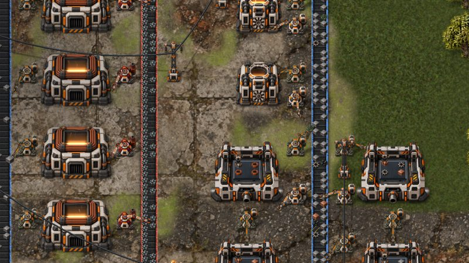
Mine, smelt, assemble and research. Belts, inserters, pipes, oil, nuclear and fusion, across a full tech tree.
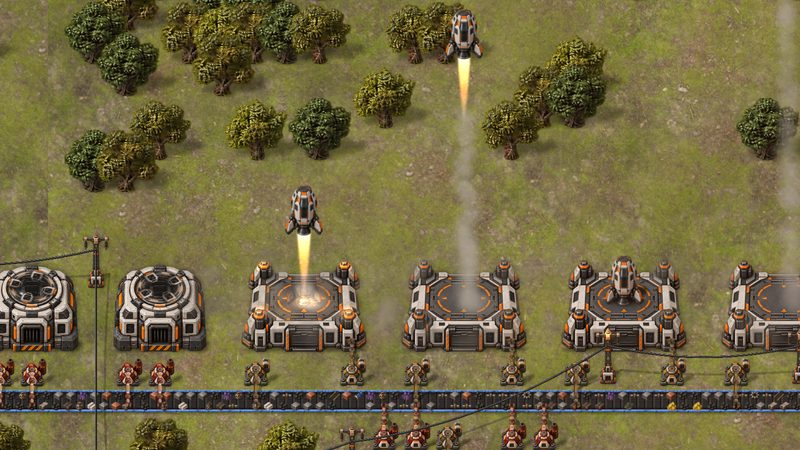
Load the landing pads and fire the cargo up to orbit.
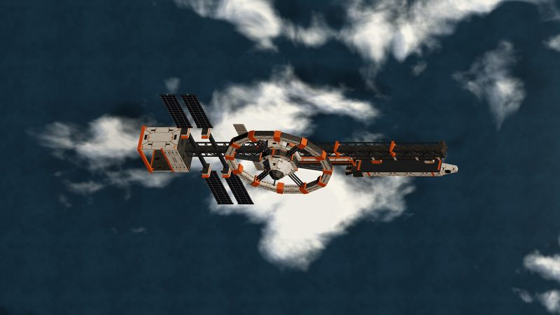
Pods dock in its hangar. Settler ships load at its bay and leave for the settler worlds.
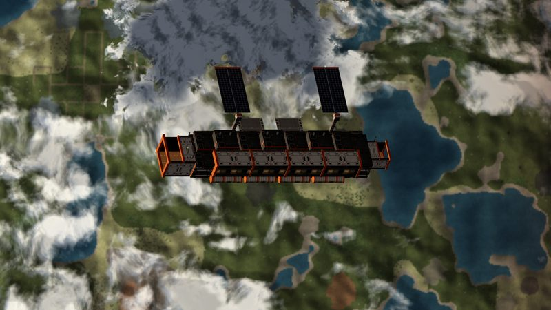
Link a pad to an orbital factory. It makes lattice processors that speed up your machines.
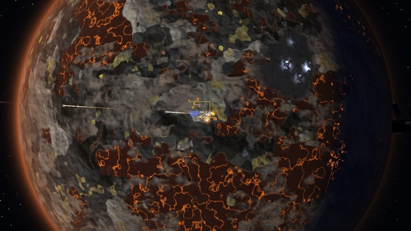
Lava seas and tungsten. Hot, close to the sun, and the best place to launch from.
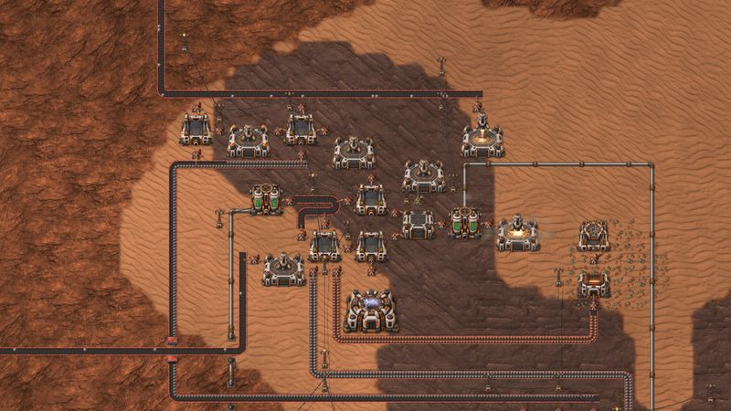
Red dunes, titanium and lithium brine.
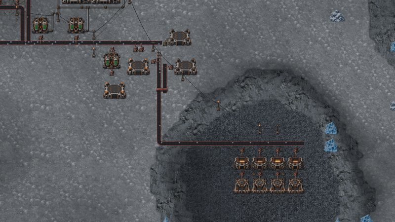
Nitrogen ice. Iridium in the craters, and ice to melt for reactors.
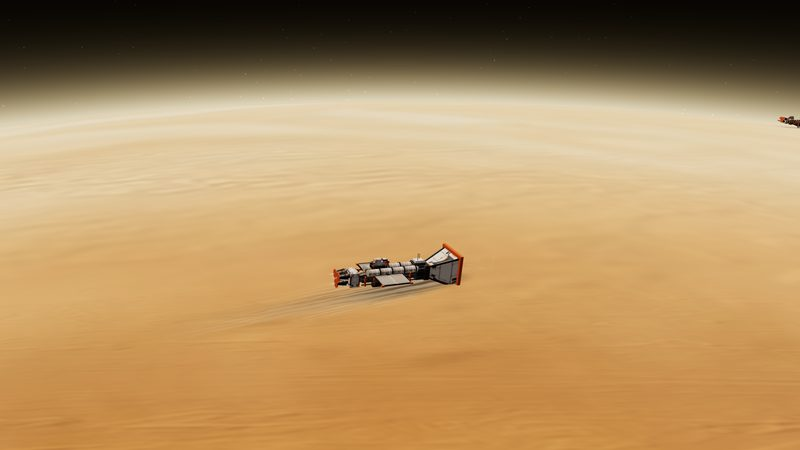
Send harvester ships to skim helium-3, deuterium and methane from Aurelia and Nereid.
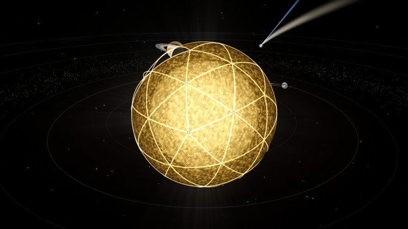
Launch frames and sails at the sun until it is wrapped in a shell, and take its power.
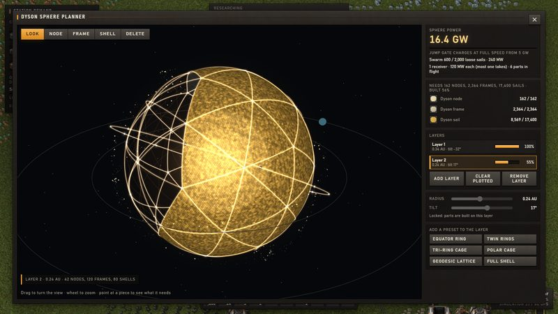
Plot nodes, frames and shells layer by layer. Your launchers fill it in.
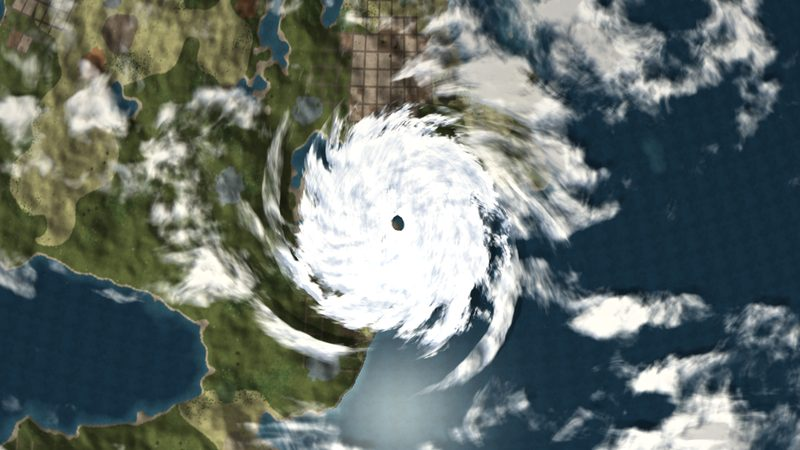
A 20-minute day. Storms, lightning, snow at the poles and hurricanes over the sea.
Nine stages, from the first scrap pulled out of the ruins to a jump gate charged by a sphere of light around your sun.
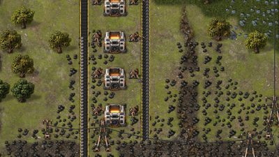
01Strip the ruins, build the first drills and furnaces, ship plates up to the station.
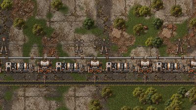
02Steam power, labs, steel and assemblers that build the factory for you.
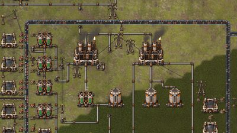
03Pipes, refineries, plastics and engines.
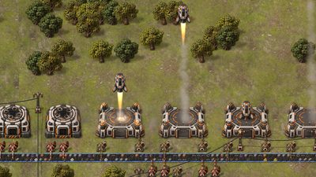
04Batteries, light alloys, processors and the first uranium.
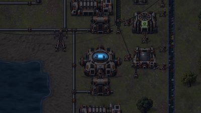
05Reactors and solar on the ground, factories in orbit overhead.
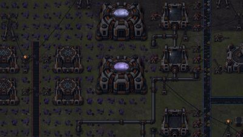
06Exotic crystals, quantum computing and fusion.
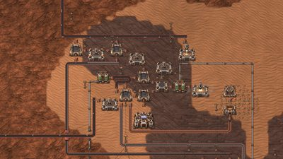
07Land on new worlds and harvest the gas giants.
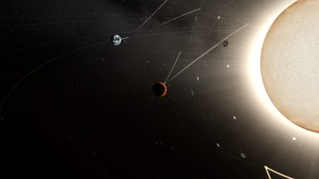
08Launch a Dyson sphere around the sun, piece by piece.
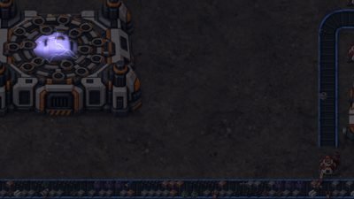
09Charge the jump gate. The next star waits.
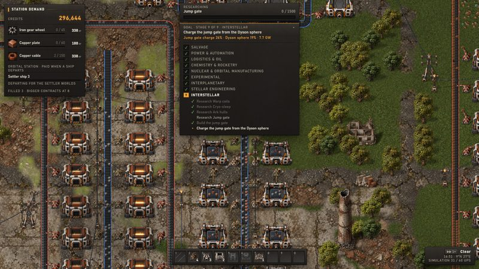
The Goals line shows the stage you're on and what it still needs.
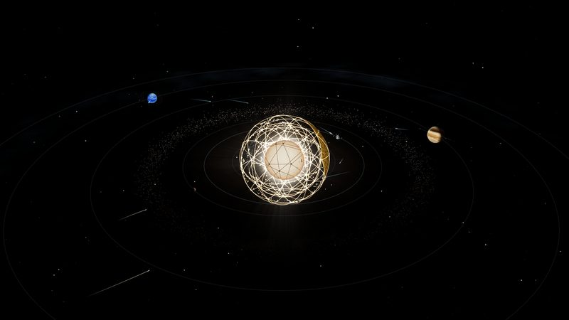
Four rocky worlds, two gas giants, freight and parts in flight between them.
Click Download for Windows and run FactoryGame-Setup.exe.
The game isn't code-signed, so Windows may say “Windows protected your PC”. Click More info then Run anyway.
It installs in a few seconds and adds a desktop shortcut. For a new version, download again and run it over the top — your saves stay.